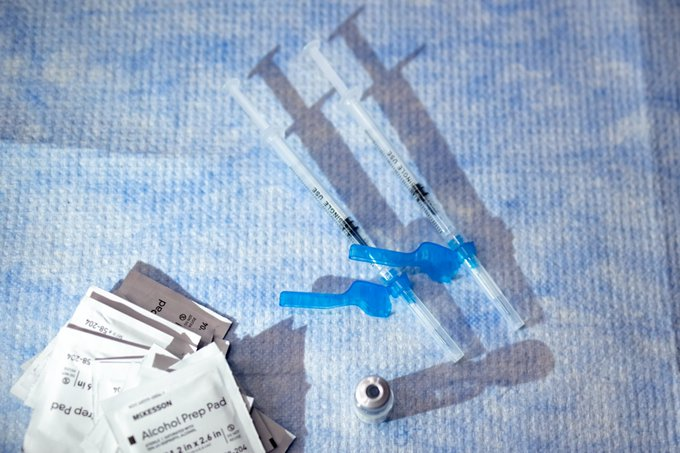

The New York Times
The New York Times
 Yesterday
Yesterday
CNN's Cuomo conundrum: A star anchor with a brother in trouble
Trending in Video Games
Rest in Peace
28K Tuits
Trending in Soccer
Gakpo
24.1K Tuits
The New York Times
 Yesterday
Yesterday
CNN's Cuomo conundrum: A star anchor with a brother in trouble

Bloomberg Opinion
 Yesterday
Yesterday
Thinking about getting a booster? Read this first.
NFL · Trending
#SFvsPHI
COVID-19 · LIVE
COVID-19: News and updates for Massachusetts